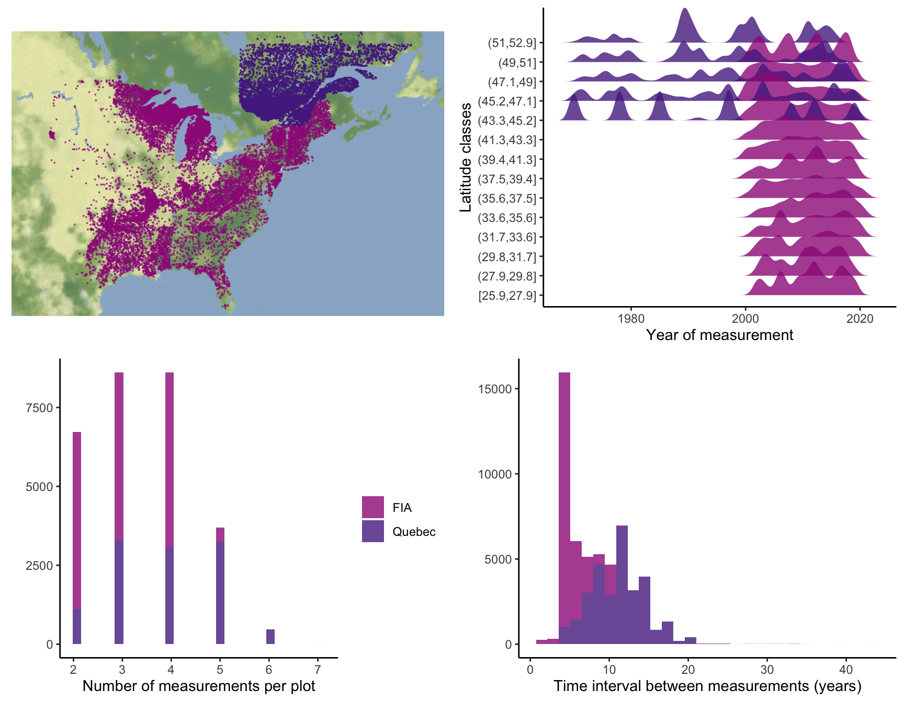

2 Dataset
This chapter outlines the two data sources and the steps to organize and create a tidy dataset for our analysis. We focus on two open inventory data from eastern North America: the Forest Inventory and Analysis (FIA) dataset in the United States (O’Connell et al. 2007) and the Forest Inventory of Québec (Ministere des Ressources Naturelles 2016). From the FIA dataset, we utilized information collected from 37 states out of the total 50: Alabama, Arkansas, Connecticut, Delaware, Florida, Georgia, Illinois, Indiana, Iowa, Kansas, Kentucky, Louisiana, Maine, Maryland, Massachusetts, Michigan, Minnesota, Mississippi, Missouri, Nebraska, New Hampshire, New Jersey, New York, North Carolina, North Dakota, Ohio, Oklahoma, Pennsylvania, Rhode Island, South Carolina, South Dakota, Tennessee, Texas, Vermont, Virginia, West Virginia, and Wisconsin.
At the plot level, we retained plots sampled at least twice, excluding those that had undergone harvesting to focus solely on natural dynamics. Specifically, we selected surveys conducted for the FIA dataset using the modern standardized methodology implemented since 1999. After applying these filters, our final dataset encompassed nearly 26,000 plots spanning a latitude range from 26° to 53° (Figure 2.1). Each plot within the dataset was measured between 1970 and 2021, with observation frequencies ranging from 2 to 7 times and an average of 3 measurements per plot. The time intervals between measurements varied from 1 to 40 years, with a median interval of 7 years (Figure 2.1).

These datasets provide individual-level information on the diameter at breast height (dbh) and the status (dead or alive) of more than 200 species. From this pool, we selected the 31 most abundant species (Table 2.1). This selection comprises 9 conifer species and 21 hardwood species. We ensured an even distribution of species across the continuous shade tolerance trait, with 3 species classified as very intolerant, 9 as intolerant, 8 as intermediate, 8 as tolerant, and 5 as very tolerant (Burns, Honkala, et al. 1990). While our analysis focuses on these 31 selected species, we retained the data for the remaining species for potential future exploration and analysis. We initially included the Ostrya virginiana species in our analysis; however, we encountered substantial challenges with several growth, survival, and recruitment parameters, with substantial confidence intervals. As a result, we decided to remove this species from our analysis, even though the fit files are still accessible for potential future investigations.
| Species | Species ID | Number of plots | Number of individual | Number of observation |
|---|---|---|---|---|
Acer rubrum |
28728ACERUB | 13149 | 96739 | 235408 |
Abies balsamea |
18032ABIBAL | 11932 | 247737 | 521565 |
Betula papyrifera |
19489BETPAP | 9508 | 78049 | 203500 |
Picea mariana |
183302PICMAR | 7869 | 186491 | 454246 |
Acer saccharum |
28731ACESAC | 7403 | 71961 | 184641 |
Picea glauca |
183295PICGLA | 5889 | 27641 | 65626 |
Populus tremuloides |
195773POPTRE | 5876 | 56010 | 127115 |
Betula alleghaniensis |
19481BETALL | 5624 | 28872 | 73116 |
Quercus rubra |
19408QUERUB | 4549 | 18272 | 46341 |
Quercus alba |
19290QUEALB | 4200 | 20376 | 51466 |
Fagus grandifolia |
19462FAGGRA | 3819 | 21784 | 51764 |
Prunus serotina |
24764PRUSER | 3730 | 12178 | 26464 |
Thuja occidentalis |
505490THUOCC | 3230 | 51312 | 125811 |
Pinus strobus |
183385PINSTR | 3165 | 15638 | 38470 |
Fraxinus americana |
32931FRAAME | 2885 | 8942 | 21501 |
Quercus velutina |
19447QUEVEL | 2722 | 10068 | 23298 |
Tsuga canadensis |
183397TSUCAN | 2604 | 17914 | 45198 |
Nyssa sylvatica |
27821NYSSYL | 2436 | 6275 | 15785 |
Quercus stellata |
19422QUESTE | 2279 | 14707 | 32102 |
Picea rubens |
18034PICRUB | 2190 | 16580 | 41674 |
Liquidambar styraciflua |
19027LIQSTY | 2154 | 11655 | 29671 |
Fraxinus pennsylvanica |
32929FRAPEN | 2149 | 9048 | 20588 |
Tilia americana |
21536TILAME | 2059 | 8415 | 21412 |
Pinus banksiana |
183319PINBAN | 2057 | 34122 | 75372 |
Populus grandidentata |
22463POPGRA | 2015 | 13759 | 29358 |
Fraxinus nigra |
32945FRANIG | 1951 | 12633 | 31156 |
Liriodendron tulipifera |
18086LIRTUL | 1912 | 8580 | 21071 |
Carya tomentosa |
NACARALB | 1636 | 3897 | 10590 |
Carya glabra |
19231CARGLA | 1622 | 4002 | 9916 |
Quercus prinus |
NAQUEPRI | 1590 | 11000 | 27554 |
Juniperus virginiana |
18048JUNVIR | 1571 | 9474 | 21400 |
Covariates
Competition index
To assess competition effects, we calculated the basal area (BA) of living individuals for each species-plot-year combination based on the dbh of each \(i\). We first calculated individual BA in \(m^2\) as follows:
\[ BA^{ind}_i = \pi * (\frac{dbh_i}{2 * 1000})^2 \]
where the dbh is measured in millimeters. For a given plot \(j\), the total plot basal area in square meters per hectare (\(m^2 ha^{-1}\)) is defined as:
\[ BA^{plot}_j = \sum_i^{n_j}{BA^{ind}_i} \times \frac{10000}{plot~area_j} \]
To compute the basal area of larger individuals (BAL), we summed the total basal area of individuals whose dbh exceeded that of the focal individual \(i\) (\(n_j > BA_i\)):
\[ BAL^{plot}_{ij} = \sum_i^{n_j > BA_i}{BA^{ind}_i} \times \frac{10000}{plot~area_j} \]
Note that BAL is now specific to the plot (\(j\)) and the individual (\(i\)).
Climate
We obtained the 19 bioclimatic variables with a 10 \(km^2\) (300 arcsec) resolution grid, covering the period from 1970 to 2018. These climate variables were modeled using the ANUSPLIN interpolation method (McKenney et al. 2011). We used the plot’s longitude and latitude coordinates to extract the mean annual temperature (MAT) and mean annual precipitation (MAP). To incorporate the climate covariates in the dataset, we used each plot’s latitude and longitude coordinates to extract the mean annual temperature (MAT) and mean annual precipitation (MAP). In cases where plots did not fall within a valid pixel of the climate variable grid, we interpolated the climate condition using the eight neighboring cells. Due to the transitional nature of the dataset, we considered both the average and standard deviation of MAT and MAP over the years within each time interval. This approach allows us to account for climate’s averaged and temporal variability effects on tree demography. Finally, we normalized MAT and MAP within the 0 and 1 range, facilitating comparisons of optimal climate conditions and climate breadth among species.
R objects
All the scripts for dataset preparation are available at https://github.com/willvieira/TreesDemography within the R folder. These scripts detail the complete process of downloading, cleaning, and merging the data, resulting in the final datasets used in our study. Metadata associated with each script is described in Table Table 2.2.
treeData.RDS: This file contains the complete dataset in a tidy format, with one observation per row.
From the treeData.RDS dataset, we derived four additional datasets, each representing the transition between time \(t\) and time $t + t`:
growth_dt.RDS: Contains growth rate information between time \(t\) and \(t + \Delta t\).status_dt.RDS: Contains individuals’ status (alive or dead) at both time \(t\) and time \(t + \Delta t\).fec_dt.RDS: Contains ingrowth rate (number of individuals entering the population at 127 mm) between time \(t\) and \(t + \Delta t\).sizeIngrowth_dt.RDS: Contains the size distribution of all individuals that entered the population for each remeasurement.
You can access all the data objects mentioned in the ownCloud folder via this link: doc.ielab.usherbrooke.ca/s/83YSAiLAGeLm682. In addition to the data objects, this folder contains three extra files:
climate_scaleRange.RDScontains the maximum and minimum values required to scale the climate covariates.db_metadata.csvcontains the csv description used in the table below.species_id.csvcontains species descriptions and additional traits used in the analysis.
| R object | Variable | Description |
|---|---|---|
| treeData | plot_id | plot ID |
| treeData | longitude | longitude crs(4326) |
| treeData | latitude | latitude crs(4326) |
| treeData | plot_size | size of plot in m2 |
| treeData | BA_plot | total plot basal area of alive individuals (m2/ha) |
| treeData | BA_comp | plot basal area of larger individuals (m2/ha) |
| treeData | relativeBA_comp | deprecated |
| treeData | s_star | the height in which the canopy closes (meters) |
| treeData | db_origin | if FIA or Quebec |
| treeData | bio_01_mean | mean of mean annual temperature for the years within the time interval |
| treeData | bio_12_mean | standard deviation of mean annual temperature for the years within the time interval |
| treeData | bio_01_sd | same as bi_01_mean, but for mean annual precipitation climate variable |
| treeData | bio_12_sd | same as bio_01_sd, but for mean annual precipitation climate variable |
| treeData | climate_cellID | the climate cell ID in which the plot climate variables were extracted (similar between MAT and MAP |
| treeData | tree_id | the unique ID for an individuala tree |
| treeData | species_id | species unique ID following the`species_id.csv` metadata file |
| treeData | status | 0 = dead; 1 = alive |
| treeData | year_measured | year of field measurement |
| treeData | dbh | diameter at breast height of the individual tree (milimiters) |
| treeData | height | height of the individiual tree (meters) |
| treeData | canopyDistance | difference between `height` and `s_star` meaning how far the individual is from the canopy close |
| treeData | BA_sp | total plot basal area of conspecific individuals (m2/ha) |
| treeData | BA_inter | total plot basal area of heterospecific individuals (m2/ha) |
| treeData | BA_comp_sp | total plot basal area of larger conspecific individuals (m2/ha) |
| treeData | BA_comp_inter | total plot basal area of larger heterospecific individuals (m2/ha) |
| treeData | relativeBA_sp | deprecated |
| treeData | bio_01_mean_scl | mean annual temperature normalized between 0 and 1 |
| treeData | bio_12_mean_scl | mean annual precipitation normalized between 0 and 1 |
| growth_dt | year0 | initial year of reference for the time interval |
| growth_dt | year1 | final year of reference for the time interval |
| growth_dt | deltaYear | year1 - year0 |
| growth_dt | dbh0 | diameter at breast height (mm) at year0 |
| growth_dt | dbh1 | diameter at breast height (mm) at year1 |
| growth_dt | deltaDbh | dbh1 - dbh0 |
| growth_dt | growth | annual growth rate (mm/year) [(dbh1 - dbh0)/deltaYear] |
| mort_dt | mort | alive (0) or dead (1) event between year0 and year1 |
| fec_dt | nbRecruit | number of ingrowth (127 mm) betweem year0 and year1 |
| fec_dt | nbSapling | sampling counts (note difference in protocols between FIA and Quebec) |
| fec_dt | nbSeedling | seedling counts (note difference in protocols between FIA and Quebec) |
| fec_dt | deltaYear_plot | year1 - year0 |
| fec_dt | plotSize_seedling | size of plot (m2) for seedling count |
| fec_dt | plotSize_sapling | size of plot (m2) for sapling count |
| fec_dt | BA_adult | similar to BA_plot |
| fec_dt | BA_adult_sp | similar to BA_sp |
| fec_dt | relativeBA_adult_sp | deprecated |